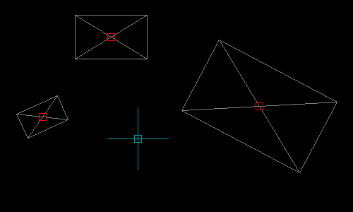

Change Block Base Point
This page is delivered for consistency purposes only, as part of the LeeMac sample module of DynALisp, which shows how DynALisp turns existing AutoLISP programs into a module. The program and its description are the work of Lee Mac, who keeps all the credit for them. The original page, with the latest version, is on Lee Mac's website: https://lee-mac.com/changeblockinsertion.html
| Function Syntax | LM-ChangeBlockBasePoint – original syntax: CBP / CBPR (see aliases) |
| Current Version | 1.5 |
| Compatible with AutoCAD for Mac? | No |
| Compatible with AutoCAD LT? | Yes |
| This program is also available at the Autodesk Exchange App Store | |
| Original Page | lee-mac.com/changeblockinsertion.html |
Program Description
This program allows the user to change the position of the block base point for all references of a block definition in a drawing.
The program offers two commands:
CBP: Change Base Point
This command will retain the insertion point coordinates for all references of the selected block. Hence visually, the block components will be moved around the insertion point when the base point position is changed.
CBPR: Change Base Point retain Reference position
This command will retain the position of each reference of the selected block. That is, the visual position of all block reference geometry will remain unchanged when the position of the block base point is altered.
Upon issuing one of the above commands at the AutoCAD command-line, the program will prompt the user to select a block for which to change the base point position.
Following a valid selection, the user is then prompted to specify a new location for the base point, relative to the selected block reference.
The block definition (and block reference depending on the command used) will then be modified to reflect the new block base point position.
If the selected block is attributed, an ATTSYNC operation will also be performed to ensure all attributes are in the correct positions relative to the new base point.
Finally, the active viewport is regenerated to reflect the changes throughout all references of the block.
The program will furthermore perform successfully with rotated & scaled block references, constructed in any UCS plane.
Please Note: A REGEN is required if the UNDO command is used to undo the operations performed by this program.
Demonstration

Bundled program notes
;;--------------------=={ Change Block Base Point }==-------------------;;
;; ;;
;; This program allows the user to change the base point for all ;;
;; block references of a block definition in a drawing. ;;
;; ;;
;; The program offers two commands: ;;
;; ;;
;; ------------------------------------------------------------------ ;;
;; CBP (Change Base Point) ;;
;; ------------------------------------------------------------------ ;;
;; ;;
;; This command will retain the insertion point coordinates for all ;;
;; references of the selected block. Hence visually, the block ;;
;; components will be moved around the insertion point when the ;;
;; base point is changed. ;;
;; ;;
;; ------------------------------------------------------------------ ;;
;; CBPR (Change Base Point Retain Reference Position) ;;
;; ------------------------------------------------------------------ ;;
;; ;;
;; This command will retain the position of the each block reference ;;
;; of the selected block. Hence, each block reference will be moved ;;
;; to retain the visual position when the base point is changed. ;;
;; ;;
;; ------------------------------------------------------------------ ;;
;; ;;
;; Upon issuing a command syntax at the AutoCAD command-line, the ;;
;; program will prompt the user to select a block for which to change ;;
;; the base point. ;;
;; ;;
;; Following a valid selection, the user is then prompted to specify ;;
;; a new base point relative to the selected block. ;;
;; ;;
;; The block definition (and block reference depending on the command ;;
;; used) will then be modified to reflect the new block base point. ;;
;; ;;
;; If the selected block is attributed, an ATTSYNC operation will ;;
;; also be performed to ensure all attributes are in the correct ;;
;; positions relative to the new base point. ;;
;; ;;
;; Finally, the active viewport is regenerated to reflect the changes ;;
;; throughout all references of the block. ;;
;; ;;
;; The program will furthermore perform successfully with rotated & ;;
;; scaled block references, constructed in any UCS plane. ;;
;; ;;
;; ------------------------------------------------------------------ ;;
;; Please Note: ;;
;; ------------------------------------------------------------------ ;;
;; ;;
;; A REGEN is required if the UNDO command is used to undo the ;;
;; operations performed by this program. ;;
;; ;;
;;----------------------------------------------------------------------;;
;; Author: Lee Mac, Copyright © 2013 - www.lee-mac.com ;;
;;----------------------------------------------------------------------;;
;; Version 1.5 - 20-10-2013 ;;
;;----------------------------------------------------------------------;;
Command Names And Aliases
As in every DynALisp module, each program of this sample module has one main command, named LM-*, and the original command names of Lee Mac's page are kept as its aliases: they run the same command, and can be added, renamed or removed in Dyl-Suite (saved in Resources\Aliases.csv). The rows marked ↳ are child commands of LM-ChangeBlockBasePoint: they are run by their alias, or picked from LM-ChangeBlockBasePoint when it lists them (their command is named Pst-*).
| Command | Aliases | Name |
|---|---|---|
| LM-ChangeBlockBasePoint | CBP | Change Block Base Point |
| ↳ CBPR | – | Change Block Base Point Retain |